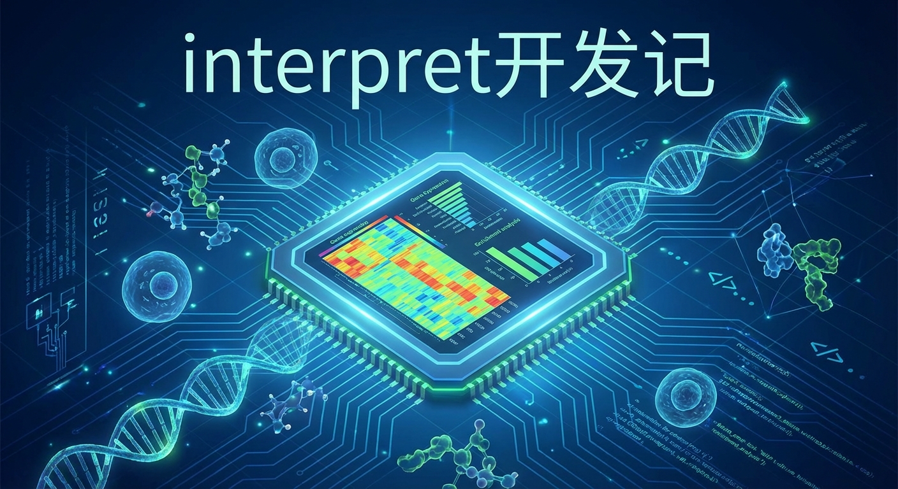

版本零
首先是看到小伙伴说把富集分析结果扔给AI来解读，那么我也来玩一下，《让AI来解读富集分析结果》。
版本一
然后转头就想，我应该写个函数，服务大家，这个主要是建立在之前fanyi包的工具基础上：《使用Fanyi包减少语言障碍、促进信息交流》。
fanyi包一开始对接一些翻译服务，后来又对接了DeepSeek等国内的LLM来做翻译。既然LLM我已经能够对接了，那写这个interpret，就是顺手的事情了。但是大家对着富集分析列表的时候，不再是一脸懵逼了，有大语言模型给出机制解说了供参考了。而且我还考虑了，你可以给上下文（比如你的实验方案、样本信息等）来让解说更有针对性。
我在群里一讲，又有小伙伴说要是能把单细胞的注释给搞了就好了。可能也就随口一说，但那天晚上我就在想着这个事情。我想起了《文章发表：用clusterProfiler刻画多组学数据》一文中的细胞注释，那个例子中，我只是用了富集分析，把最显著的拿出来。显然把结果给LLM，再加上marker genes，它能给出更好的结果。于是在晚上有空的时候，打开电脑，一搞就搞到1点多 ，出来结果还不错。然后我就在想，原先我是要机制解说，现在细胞类型其实是给一个标签（当然我也要理由，为什么是这个标签）。那么我能给一个细胞类型的标签，我为什么不能让它给一个表型的标签。于是interpret变成了三个功能，给机制，给细胞类型，给表型。结果就是这篇：《AI + Biology具象化：让AI来接手你的clusterProfiler结果》。
版本二
细胞类型的标签，从PBMC 3K这个数据集来看，就只有一个对不上，就是把NK给标成了细胞毒性CD4+ T细胞。我问了临床背景的学生，跟我说要区分这两个，得看啥啥啥。我说那行，你去看一下吧，数据就是PBMC 3K。
在聊的过程中，有学生提出来，有一个大模型作注释的，我一看，这啥啊，于是吐槽了一下：《[震惊！Nature Methods 的 AI 细胞注释，Prompt 竟然只有一句话？](震惊！Nature Methods 的 AI 细胞注释，Prompt 竟然只有一句话？)》。
还提到了scGPT，我看了一下，跟学生讲，这不就是把SingleR用AI再做一遍嘛。本质上是这样子的，因为SingleR是对齐表达谱，而scGPT是在嵌入层对齐，所以我这么说。
在讲这些的时候，就聊到了，平时大家手工做注释，会先跑个SingleR看个大概，再自己手工注释。也有先大类注释，再进行小类注释的。于是我针对第一种情况，把interpret加入了一个参数，你可以把这些SingleR/scGPT出来的结果做为先验知识，那么interpret的任务就是进一步的验证、细化、或者推翻重注释。另外针对第二种情况，写了一个新的函数，interpret_hierarchical，支持这种大类 -> 小类的父子继承制注释过程。这就是《[告别瞎猜！clusterProfiler 新增“参考引导”模式，让 AI 注释准确率暴涨 10 倍！](告别瞎猜！clusterProfiler 新增“参考引导”模式，让 AI 注释准确率暴涨 10 倍！)》。
版本三
在上面提到的让学生确认一下，结果我等了一周，没有任何反馈。于是我自己去核对，我最终确认，是NK细胞没错。LLM在解读的时候，优先从p值最显著的开始看，然后看基因是否支持，支持了就确认了，把结果返回。因为这两种细胞太像了，就导致注释错了。于是我改了提示词，让LLM一次同时看3-5个富集的terms，然后用marker genes去区分它们，特别是当有非常特异性的marker出现时，要优先考虑。然后interpret就能够准确注释出PBMC 3K的所有细胞类型了。《[Cluster 6 的“身世之谜”：从 T 细胞到 NK 细胞，clusterProfiler 到底看穿了什么？](Cluster 6 的“身世之谜”：从 T 细胞到 NK 细胞，clusterProfiler 到底看穿了什么？)》。
版本四
我琢磨了一下，又在想，其实我还可以把PPI和表达量给塞进去，这样子，不是能够更好地理解机制吗？所以前有版本二的参考模式，现在有“知识引导”，《AI 懂网络了！clusterProfiler 引入“知识引导”模式，构建细胞调控全景图》。
当然这两个并不是二选一，你可以全都要，理论上让AI懂得越多，它做得越好。
版本五
我在搞版本四的时候，我又在想，给AI太多东西了，并不见得效果会更好，因为上下文可能太长了。它有可能hold不住啊。
那么我可以拆解一下，于是又来了一个多智能体的版本，《告别“对着富集列表发呆”！clusterProfiler 引入 AI 多智能体，一键挖掘生物学故事》。
当然多智能体也不是万能的，第一，它费token；第二，这几个智能体是顺序工作的。也就是后面的智能体，是要靠前面的智能体的输出来投喂的。要是二手资料的质量差点，它最终结果也不见得好。
版本六
又想起了版本四的PPI，既然大语言模型能够给出机制解说，那么我何不让它把这机制在PPI上反映出来，也就是我给的PPI，是stringdb里的PPI，是一个死知识，你看了我的数据，你裁剪出来一个更小的，契合我解说的机制图。这听起来就很完美啊。于是我就让AI这么干了，《DeepSeek + clusterProfiler：不仅会写“小作文”，现在还能画“机制图”！》
版本七
有学生跑了，跟我说有一个细胞类群，没有富集分析结果，所以interpret没有给出细胞类型注释。那这也不奇怪，interpret是基于富集分析结果的，但如果我们自己做，肯定还是强行给出注释的。于是我就来个”降级补求“的办法，完全没有富集，那就拿着marker genes，尽量去注释，《富集分析“翻车”了怎么办？clusterProfiler 智能体学会了“绝地求生”》
后续
当然还会有版本八、版本九，比如我们能不能评估，LLM给出来的是不是幻觉？我们能不能支持ChatGPT等更多的LLM？
这7个版本，可以说，基本上是一拍脑袋，我就去实现了，所以现在只能说是alpha版本。做单细胞注释这种脏活都是学生干的，我没有什么实战经验，所以可能会考虑不周。再者还是缺乏实战经验，所以也不太可能在工作中不断迭代。
所以需要靠大家的使用和反馈，来促进它不断迭代。我相信这个功能还是能够节省大家相当多的时间，也可能会做得比大家花了很多时间手搓的更好。
一点思考
Gung-hu liān kàu sí, m̄-rû tsi̍t lia̍p chí-tuāⁿ.：功夫练一辈子，也比不上一颗子弹
AI终将席卷一切，《AI + Biology具象化：让AI来接手你的clusterProfiler结果》，在这一篇里，我一开始也说了，我觉得我能做得更好，所以我才需要出来写一个interpret的函数。也在《[震惊！Nature Methods 的 AI 细胞注释，Prompt 竟然只有一句话？](震惊！Nature Methods 的 AI 细胞注释，Prompt 竟然只有一句话？)》这一篇里吐槽了一下。AI在不同的人手里，是不一样的。
有一天晚上睡不着，我在想，读个研究生，这三年的就业环境一年不如一年，再加上现在AI的影响。毕业了找工作可能还不如三年前本科毕业直接去工作。要让自己不掉价，本身就是一件挺难的事情。以前总有位置，因为是金字塔型的，优秀的人下面，总有打下手的。现在AI智能体这么发展，以后优秀的人手下只需要有AI打工人就行了。Hinton都告诫大家：还是当个水电工好！
想着我劝了两年，要是稍微努力点，再加上现在AI的加持，能做的事情，在自己面前的机会，只会更多，而不是更少。
现在大家说：1）努力不重要，AI是降维打击；2）知识会变得廉价，知识不重要，想法才重要。
我的看法是知识只是获取更容易了，要进自己脑子里才是自己的，（当然获取更容易了，总会有人以更快的速度让它变成自己的，社会更需要的是那少量的精英），一个人的知识是一个圆，只有把这个圆搞大，边界才会大，才会有”想法“。这个 学渣的魔咒 其实也是”知识的魔咒“。
牛顿说他是站在巨人的肩膀上，这句话经常被解读为谦虚，实际上牛顿只是在说一个事实。
— 还活在石器时代的Y叔叔